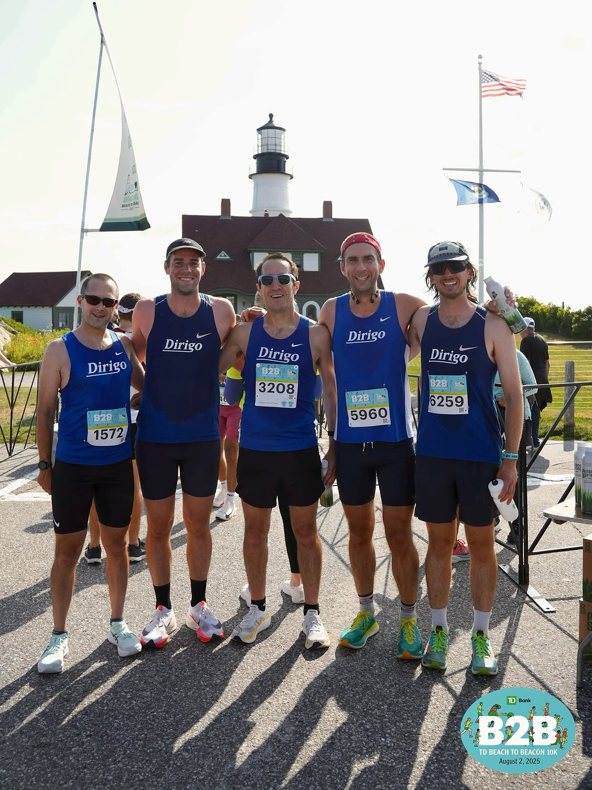
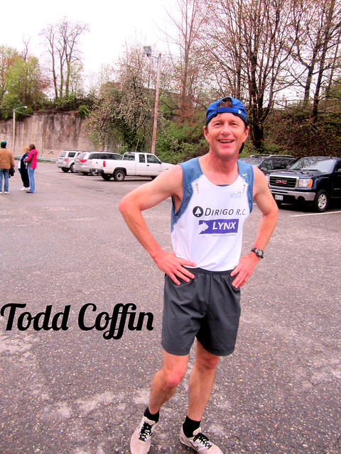
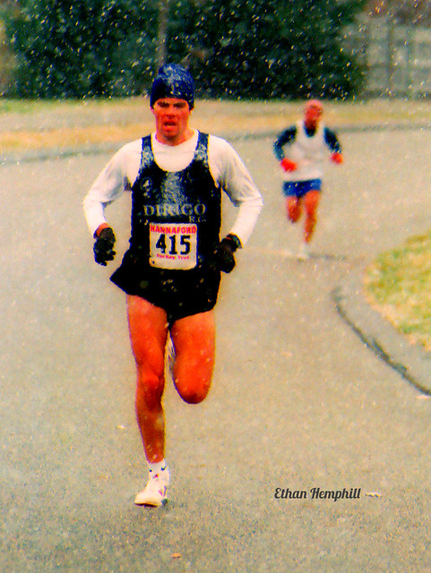
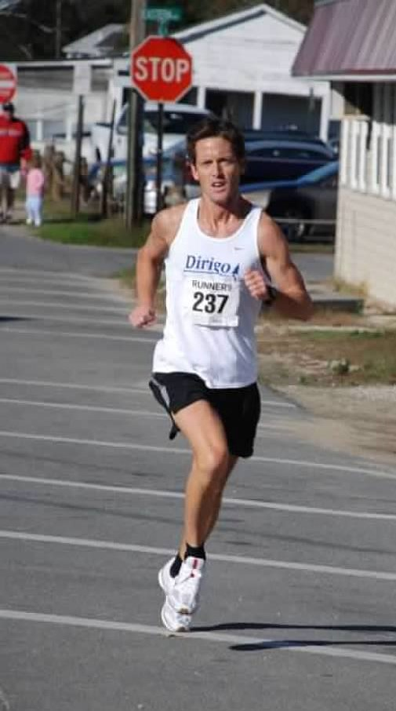

Race as a team
Dirigo was founded around a simple idea: individual runners become something bigger when they line up together.
History
Dirigo began in 2002 with a simple idea: give Maine runners a team presence in New England's deepest races.

Halfway through a hard workout on Flying Point Road in Freeport, Andy Spaulding offered a single word.
Dirigo.
The others did not have much to say. They were in the middle of an interval session. A few days later, the name stuck.
Dirigo is Maine's state motto, Latin for "I lead." It captured exactly what the founders wanted: a team that could bring Maine's strongest runners together and compete with the best clubs in New England.
The early club was not built around weekly workouts or formal programming. It was a racing team first, organized around the USATF New England Grand Prix and one simple question: what could Maine runners accomplish if they lined up together?
Source: John Rolfe, "Maine's premier team? Look under 'Dirigo RC'," March 24, 2002.
Early photos show the club taking shape in the same way the story does: runners scattered across Maine, finding each other through races, team colors, and a shared competitive pull.




Historical photos courtesy of Maine Running Photos.
Dirigo's first New England Grand Prix race came at the 2002 New Bedford Half-Marathon.
The new club finished fifth among 20 teams, with Andy Spaulding, Ethan Hemphill, Todd Coffin, Christian Muentener, and Robert Ashby scoring.
For a team that had only recently taken shape, the placement mattered. What mattered more was what it represented.
The experiment worked.
Maine runners could line up together and compete on one of New England's biggest stages.
Dirigo was founded around a simple idea: individual runners become something bigger when they line up together.
From the beginning, the goal was not simply to win races. It was to show what Maine runners could accomplish on the regional stage.
The singlet has changed over the years, but it still means the same thing: representing your teammates, your state, and the sport well.